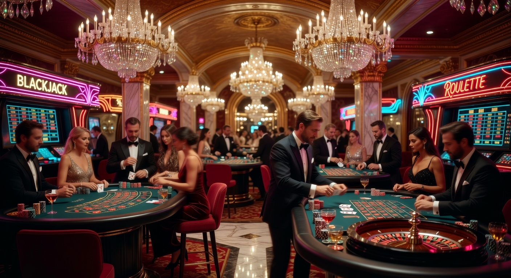
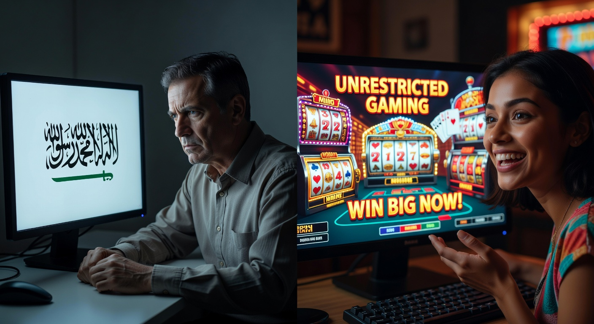
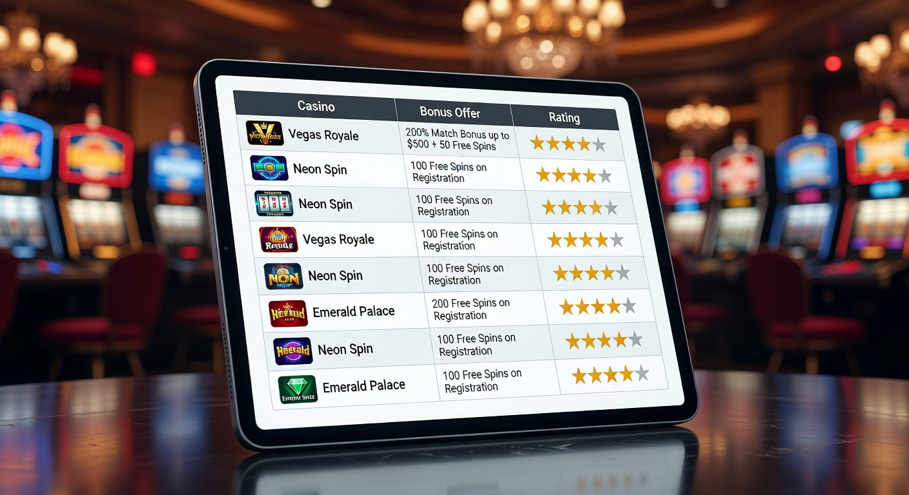
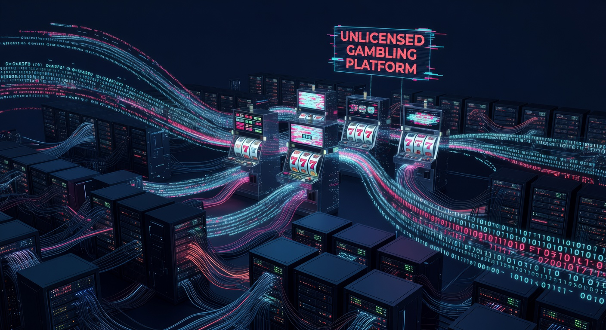

Casino zonder licentie in Nederland: De complete gids voor 2026
Het landschap van de online kansspelen in Nederland is anno 2026 drastisch veranderd. Waar we een aantal jaren geleden nog aan het begin stonden van de gereguleerde markt, is de sector inmiddels volwassen geworden. Toch zien we een opvallende trend: een groeiende groep ervaren spelers kiest bewust voor een casino zonder licentie van de Nederlandse Kansspelautoriteit. In deze uitgebreide gids duiken we diep in de wereld van internationale goksites, de redenen achter deze verschuiving en waar je op moet letten als je de grenzen van de KSA verlaat.
De term "casino zonder licentie" kan voor nieuwkomers verwarrend klinken. Het betekent namelijk niet dat een aanbieder helemaal geen vergunning heeft. Integendeel, de meeste betrouwbare platformen opereren onder strikte internationale regels uit jurisdicties zoals Malta of Curaçao. Het verschil zit hem puur in het ontbreken van de specifieke Nederlandse KSA-vergunning. In 2026 zijn de regels in Nederland strenger dan ooit, wat heeft geleid tot een zoektocht naar meer vrijheid, hogere limieten en betere bonusvoorwaarden buiten de landsgrenzen.
Of je nu op zoek bent naar een casino zonder cruks om restricties te vermijden, of simpelweg wilt profiteren van een breder spelaanbod, deze gids biedt alle antwoorden. We hebben de markt van 2026 geanalyseerd om jou te voorzien van actuele informatie over veiligheid, betalingen en de legaliteit van internationaal gokken. We bekijken hoe deze sites zich verhouden tot bekende namen zoals Casino 777 of Kansino, en waarom de keuze voor een buitenlandse partij soms voordeliger kan uitpakken.
Wat is een online casino zonder vergunning precies?
Wanneer we spreken over een online casino zonder vergunning, doelen we in de Nederlandse context specifiek op aanbieders die geen licentie hebben verkregen van de Nederlandse Kansspelautoriteit (KSA). Deze sites richten zich niet specifiek op de Nederlandse markt met lokale reclames of iDEAL-logo's op de homepage, maar accepteren wel spelers uit de hele wereld, waaronder Nederland. Het zijn vaak grote, beursgenoteerde bedrijven die wereldwijd opereren en miljoenen actieve gebruikers hebben.
Een casino zonder licentie in Nederland heeft vaak wel een vergunning in een ander land. Denk hierbij aan de Malta Gaming Authority (MGA) of de autoriteiten in Curaçao. Deze toezichthouders zorgen ervoor dat de spellen eerlijk verlopen, dat de software wordt getest door onafhankelijke instanties zoals eCOGRA en dat spelersgelden veilig zijn opgeslagen. Het grote verschil is dat zij niet gebonden zijn aan de Nederlandse restricties met betrekking tot speellimieten, reclameverboden en de verplichte Cruks-registratie.
In 2026 zien we dat het onderscheid tussen 'legaal' en 'illegaal' vaak genuanceerder is dan de overheid doet voorkomen. Voor de speler is het vooral een kwestie van waar de beste voorwaarden te vinden zijn. Een online casino zonder Nederlandse papieren biedt vaak een authentiekere casino-ervaring die vergelijkbaar is met wat je in Las Vegas of Macau zou aantreffen, zonder dat elke stap die je zet door een centraal register wordt gemonitord. Dit trekt vooral de "high rollers" en de frequente spelers aan die de betutteling in eigen land willen ontwijken.
Beste casino’s zonder CRUKS 2026

De zoektocht naar het beste casino zonder licentie brengt ons bij een aantal platformen die in 2026 de toon zetten. Deze sites onderscheiden zich door een combinatie van razendsnelle uitbetalingen, een gigantisch spelaanbod en een klantenservice die 24/7 bereikbaar is. Omdat ze niet hoeven te voldoen aan de kostbare Nederlandse regelgeving, kunnen ze vaak een hogere RTP (Return to Player) aanbieden op hun gokkasten, wat direct voordeel oplevert voor de consument.
In onze top aanbevelingen voor 2026 zien we vooral sites die gebruikmaken van moderne technologieën. Denk aan directe bankoverschrijvingen via open banking-systemen die de snelheid van iDEAL evenaren, maar dan zonder de tussenkomst van iDIN of andere Nederlandse verificatiemethoden. Hierdoor kun je sneller beginnen met spelen en hoef je niet door een langdurig proces van documentcontrole heen voordat je jouw eerste winst kunt incasseren. Dit gemak is een van de voornaamste redenen waarom spelers de overstap maken naar een casino zonder cruks.
Bovendien bieden deze top-tier buitenlandse casino's vaak loyaliteitsprogramma's die in Nederland inmiddels verboden of sterk ingeperkt zijn. Je kunt hierbij denken aan cashback-regelingen waarbij je een percentage van je verliezen wekelijks terugkrijgt, of persoonlijke accountmanagers die exclusieve bonussen verstrekken. In een markt waar de KSA-casino's steeds meer op elkaar gaan lijken qua aanbod en restricties, bieden deze internationale spelers een broodnodig alternatief voor de serieuze gokker.
Hoe wij deze goksites hebben getest op veiligheid
Veiligheid is het allerbelangrijkste wanneer je besluit te spelen bij een casino zonder licentie. Onze experts hebben in 2026 een rigoureus testprotocol ontwikkeld om de betrouwbaarheid van deze platformen te waarborgen. We kijken allereerst naar de eigenaar van de site. Grote groepen met een jarenlange reputatie hebben de voorkeur boven nieuwe, onbekende partijen. We controleren of de licentiegegevens op de website daadwerkelijk overeenkomen met de registers van de betreffende autoriteit in Malta of Curaçao.
Daarnaast testen we de snelheid en eerlijkheid van de uitbetalingen. Een betrouwbaar online casino zonder licentie zal nooit moeilijk doen over het uitkeren van winst, mits aan de bonusvoorwaarden is voldaan. We storten zelf bedragen, spelen verschillende spellen en vragen vervolgens een uitbetaling aan om te zien hoe soepel dit proces verloopt. Ook de kwaliteit van de software is een graadmeter; we willen alleen spellen zien van gerenommeerde providers zoals NetEnt, Evolution Gaming en Pragmatic Play, omdat hun systemen extern worden geaudit op eerlijkheid.
Tot slot evalueren we de tools voor verantwoord spelen. Hoewel een casino zonder cruks niet is aangesloten op het Nederlandse register, moet een goede site wel eigen limieten aanbieden. Denk aan stortingslimieten, sessietijden en de mogelijkheid tot een zelfuitsluiting. Een platform dat geen enkele vorm van spelersbescherming biedt, komt niet in onze lijst voor 2026. Veiligheid betekent in dit geval de vrijheid om te spelen, maar wel met de middelen om jezelf te beschermen als dat nodig is.
Waarom kiezen Nederlanders voor gokken buiten de KSA?

De populariteit van het casino zonder licentie in Nederland is niet uit de lucht komen vallen. Sinds de marktopening in 2021 zijn de regels stap voor stap aangescherpt. In 2026 is de situatie zo dat veel spelers zich beperkt voelen in hun keuzes. De Nederlandse overheid hanteert strikte stortingslimieten en een verbod op veel soorten bonussen voor jongvolwassenen. Dit heeft geleid tot een "kanaalvlucht" waarbij de bewuste consument op zoek gaat naar platformen waar zij zelf de controle hebben over hun speelgedrag.
Een ander punt is de privacy. Bij een Nederlands casino is men verplicht om via DigiD of iDIN gegevens te verifiëren. Veel mensen vinden het onprettig dat hun gokgedrag op deze manier gekoppeld is aan hun officiële identiteit en potentieel zichtbaar is voor overheidsinstanties. Een online casino zonder deze koppelingen biedt een hogere mate van anonimiteit. Men kan vaak eenvoudig registreren met een e-mailadres en een basisverificatie, wat voor veel spelers een verademing is in een tijd van toenemende data-honger bij de overheid.
Ook de technologische innovatie speelt een rol. Buitenlandse casino's lopen vaak voorop met nieuwe betaalmethoden, zoals bitcoin en andere cryptocurrencies, en innovatieve spelvormen die nog niet zijn goedgekeurd door de Nederlandse Kansspelautoriteit. De behoefte aan variatie en moderne functies drijft spelers naar internationale wateren. Voor hen weegt het voordeel van een uitgebreider aanbod zwaarder dan de vermeende extra bescherming die een Nederlandse licentie zou bieden.
Geen beperkingen door het Cruks-register
Het Centraal Register Uitsluiting Kansspelen (Cruks) is bedoeld als vangnet voor probleemgokkers, maar in de praktijk ervaren veel recreatieve spelers het als een hinderlijke barrière. Een foutieve registratie of een overijverige preventiemedewerker kan ervoor zorgen dat je maandenlang nergens in Nederland meer terecht kunt. Een casino zonder cruks biedt hier de oplossing. Omdat deze sites niet zijn aangesloten op de Nederlandse database, kun je hier altijd terecht, ongeacht je status in Nederland.
Het omzeilen van Cruks is voor sommigen een noodzaak, voor anderen een principezaak. In 2026 zien we dat veel spelers die hun speelgedrag prima onder controle hebben, toch geregistreerd staan door een impulsieve beslissing in het verleden. Voor hen is een casino zonder licentie de enige manier om hun hobby weer op te pakken. Deze sites hanteren hun eigen verantwoord gokken beleid, dat vaak veel persoonlijker en minder rigide is dan het algemene Nederlandse systeem.
Hogere bonussen en loyaliteitsprogramma's
Wie kijkt naar de promotiepagina van een casino met een Nederlandse licentie, ziet vaak magere aanbiedingen. De overheid heeft bonussen aan banden gelegd om gokken niet te "stimuleren". Bij een casino zonder licentie gelden deze beperkingen niet. Hier vind je nog steeds welkomstbonussen van honderden of zelfs duizenden euro's, vaak gecombineerd met honderden free spins op populaire gokkasten. Dit vergroot het startsaldo aanzienlijk en geeft spelers meer waar voor hun geld.
Bovendien zijn de loyaliteitsprogramma's (VIP-clubs) bij buitenlandse aanbieders veel lucratiever. Je spaart punten voor elke inzet, die je vervolgens kunt inwisselen voor cash, elektronica of zelfs luxe reizen. In Nederland zijn dergelijke prikkels bijna volledig verdwenen. Voor een regelmatige speler kan het verschil in waarde tussen een KSA-site en een online casino zonder licentie over een jaar tijd duizenden euro's bedragen aan gemiste bonussen en extraatjes.
Groter aanbod aan spellen en software providers
De Nederlandse regelgeving stelt strenge eisen aan welke spellen mogen worden aangeboden. Dit zorgt voor een vertraging in het aanbod van nieuwe titels. Bij een casino zonder licentie heb je vaak direct toegang tot de nieuwste releases van providers wereldwijd. Bovendien vind je daar spellen die in Nederland simpelweg verboden zijn, zoals bepaalde "bonus buy" features waarbij je direct toegang koopt tot de bonusronde van een gokkast. Voor veel spelers is dit een essentieel onderdeel van de spanning.
Ook het live casino aanbod is in het buitenland vaak superieur. Waar Nederlandse sites zich beperken tot de bekende tafels van Evolution of Playtech, vind je bij internationale casino's ook nicher aanbieders zoals Pragmatic Play Live, Authentic Gaming en Ezugi. Dit zorgt voor een grotere variëteit aan tafels, limieten en presentatoren. Of je nu op zoek bent naar een casino zonder cruks met duizenden gokkasten of een intieme live blackjack ervaring, het internationale aanbod is simpelweg onverslaanbaar in 2026.
Beste casino’s zonder CRUKS 2026 - Overzichtstabel

Om je een beeld te geven van de verschillen tussen de diverse opties, hebben we een vergelijking gemaakt van de belangrijkste kenmerken in 2026.
| Kenmerk | KSA Casino (Nederland) | Casino zonder licentie (MGA) | Casino zonder licentie (Curaçao) |
|---|---|---|---|
| Cruks Controle | Verplicht | Nee | Nee |
| Betaalmethoden | iDEAL, Creditcard | Volt, Klarna, Trustly | Crypto, Creditcard, Revolut |
| Welkomstbonus | Laag (max €250) | Gemiddeld (€500 - €1000) | Hoog (€2000+) |
| RTP op Slots | Vaak verlaagd (90-94%) | Standaard (96%+) | Hoog (97%+) |
| Verificatie | iDIN / DigiD | Document upload | Minimaal / Crypto-gebaseerd |
Hoe werkt een online casino zonder vergunning?

Het mechanisme achter een casino zonder licentie is in essentie hetzelfde als bij elk ander online gokplatform. Het draait op een server in een land waar online gokken legaal en gereguleerd is. Wanneer je als Nederlandse speler verbinding maakt, maak je gebruik van een internationaal platform. De site is geoptimaliseerd voor mobiel gebruik en biedt een interface in het Engels (of soms andere talen), aangezien het gebruik van de Nederlandse taal verboden is voor sites zonder KSA-licentie om boetes te voorkomen.
Registratie bij een casino zonder cruks verloopt meestal erg soepel. In plaats van je hele doopceel te lichten via overheidsdiensten, vul je een simpel formulier in. Na je eerste storting kun je direct beginnen. Het platform maakt gebruik van Random Number Generators (RNG) om de uitkomst van spellen te bepalen, wat wordt gecontroleerd door de licentiegever. De winsten die je behaalt, worden bijgeschreven op je digitale balans en kunnen via diverse internationale betaalwegen worden opgenomen naar je bankrekening of e-wallet.
Wat cruciaal is om te begrijpen in 2026, is dat deze casino's opereren op basis van internationale verdragen en de vrijheid van dienstverlening binnen bepaalde regio's. Hoewel de Nederlandse Kansspelautoriteit probeert de markt af te schermen, is het technisch en juridisch complex om alle internationale sites te blokkeren. Hierdoor blijft het casino zonder licentie een toegankelijk en populair alternatief voor wie weet waar hij moet zoeken en hoe hij veilig moet navigeren in deze wereldwijde markt.
Wat is Cruks? (Centraal Register Uitsluiting Kansspelen)
Het Centraal Register Uitsluiting Kansspelen, beter bekend als Cruks, is de hoeksteen van het Nederlandse kansspelbeleid. Het is een database waarin spelers worden opgenomen die een gokpauze willen of moeten inlassen. Zodra je in dit register staat, word je automatisch geweigerd bij alle legale Nederlandse online casino's en fysieke vestigingen zoals Holland Casino. Dit systeem is gekoppeld aan je BSN, waardoor ontsnappen binnen de landsgrenzen onmogelijk is. Voor velen is dit de reden om uit te wijken naar een casino zonder licentie.
Cruks kan op twee manieren worden geactiveerd: vrijwillig, waarbij de speler zichzelf inschrijft voor een periode van minimaal zes maanden, of onvrijwillig. Bij een onvrijwillige registratie kan een familielid of de aanbieder zelf een verzoek indienen bij de Kansspelautoriteit als er duidelijke tekenen van gokverslaving zijn. Hoewel de intentie goed is, leidt het systeem vaak tot frustratie bij spelers die na een korte pauze weer willen spelen maar vastzitten aan de minimale termijn van het register.
In 2026 is de roep om een flexibeler systeem in Nederland groot, maar tot die tijd blijft het casino zonder cruks het enige alternatief voor wie de controle over zijn eigen toegang wil behouden. Het is belangrijk om te onthouden dat Cruks alleen werkt voor aanbieders met een Nederlandse licentie. Internationale sites hebben geen toegang tot deze database en kunnen dus ook niet controleren of een speler hierin vermeld staat, wat de deur opent voor spelers die elders zijn uitgesloten.
Cruks omzeilen, kan dat?
De vraag of je Cruks kunt omzeilen is een veelgehoorde in de Nederlandse gokgemeenschap. Het korte antwoord is: ja, maar niet binnen de Nederlandse legale markt. Er zijn geen achterdeurtjes bij Kansino of Fair Play Casino; hun systemen zijn waterdicht gekoppeld aan de landelijke database. De enige effectieve manier om te blijven spelen tijdens een actieve Cruks-registratie is door te kiezen voor een casino zonder licentie. Deze buitenlandse sites opereren buiten de rechtsmacht van de KSA en negeren de Nederlandse uitsluitingslijst.
Het omzeilen van het register via een online casino zonder Nederlandse vergunning brengt wel een eigen verantwoordelijkheid met zich mee. Als je jezelf hebt ingeschreven omdat je echt een probleem hebt, is het onverstandig om de grens over te gaan. Echter, voor de groep die door een fout of een te strenge interpretatie van de regels in Cruks is beland, biedt het buitenlandse aanbod een legitieme uitweg. In 2026 maken duizenden Nederlanders dagelijks gebruik van deze mogelijkheid om de beperkingen van de eigen overheid te omzeilen.
Het proces is simpel: je zoekt een betrouwbaar online casino zonder licentie, maakt een account aan en je kunt spelen. Er is geen controle op je BSN of je status in Nederland. Let er wel op dat je kiest voor sites met een goede reputatie. Het omzeilen van Cruks mag dan eenvoudig zijn, je wilt wel zeker weten dat je speelt bij een partij die je winsten netjes uitbetaalt en eerlijke spellen aanbiedt. Veiligheid blijft de hoogste prioriteit, ook als je de regels van eigen bodem achter je laat.
Verschillen tussen KSA-casino's en internationale aanbieders
Het grootste verschil tussen een KSA-casino en een casino zonder licentie zit hem in de mate van overheidsbemoeienis. In Nederland wordt bijna elke actie gemonitord. Er zijn limieten aan hoe lang je mag spelen, hoeveel je mag storten en welke bonussen je mag ontvangen. Bij een internationaal online casino is de filosofie vaak gebaseerd op individuele verantwoordelijkheid. Jij bepaalt je eigen grenzen. Dit spreekt vooral volwassen spelers aan die geen behoefte hebben aan een overheid die over hun schouder meekijkt.
Een ander significant verschil is de belasting. Bij een casino met een Nederlandse licentie wordt de kansspelbelasting vaak al door de aanbieder afgedragen of hoef je dit als speler niet meer te doen over je nettowinst. Bij een casino zonder licentie dat buiten de EU gevestigd is, ben je in theorie zelf verantwoordelijk voor de aangifte van je winsten bij de Belastingdienst. In 2026 zijn de regels hiervoor complex, en veel spelers kiezen daarom voor MGA-casino's (Malta), omdat deze binnen de EU vallen en vaak gunstigere belastingvoorwaarden kennen voor de consument.
Ook de technologische aspecten verschillen. Nederlandse casino's zijn verplicht gebruik te maken van iDEAL en iDIN voor identificatie. Dit is veilig, maar traag bij het aanmaken van een account. Een casino zonder cruks in het buitenland gebruikt vaak modernere technieken zoals 'Pay N Play' via Trustly of directe crypto-stortingen. Hierdoor is de gebruikerservaring vaak vloeiender en moderner. Het aanbod van live casino games is in het buitenland bovendien veel groter, met meer tafels en hogere inzetlimieten dan we bij de Nederlandse aanbieders zien.
Betrouwbare licenties buiten de Nederlandse landsgrenzen
Als je de stap zet naar een casino zonder licentie in Nederland, is het essentieel om te weten welke andere licenties wel waarde toevoegen. Een site zonder enige licentie is een absolute 'no-go'. Gelukkig zijn er internationaal hoog aangeschreven autoriteiten die streng toezicht houden. Deze licenties garanderen dat het online casino voldoet aan internationale standaarden voor eerlijk spel en financiële stabiliteit. In 2026 zijn er vier hoofdregio's waar je op moet letten.
De aanwezigheid van een logo van de Malta Gaming Authority of de autoriteiten uit Curaçao onderaan de website is een goed teken. Het betekent dat het bedrijf een screeningsproces heeft doorlopen en dat er een klachtenprocedure is waar je als speler op kunt terugvallen. Hoewel de Nederlandse overheid deze licenties niet erkent voor hun eigen markt, worden ze wereldwijd gezien als kwaliteitskeurmerken. Een betrouwbaar online casino zonder licentie van de KSA zal altijd trots pronken met hun internationale vergunningen om het vertrouwen van de speler te winnen.
Het is ook interessant om te zien hoe nieuwe jurisdicties zoals Anjouan en Kahnawake aan populariteit winnen in 2026. Zij bieden licenties aan die goedkoper zijn voor de aanbieder, wat zich vaak vertaalt in nog betere bonussen voor de spelers. Echter, voor de gemiddelde Nederlandse speler blijft de MGA-licentie de gouden standaard vanwege de strikte EU-regelgeving waar zij aan moeten voldoen. We raden aan om altijd even het licentienummer te verifiëren op de officiële site van de toezichthouder voordat je een grote storting doet bij een casino zonder cruks.
Malta Gaming Authority (MGA)
De Malta Gaming Authority is misschien wel de meest gerespecteerde toezichthouder binnen de Europese Unie. Een casino zonder licentie in Nederland, maar met een MGA-vergunning, wordt door experts vaak als zeer veilig beschouwd. De eisen die Malta stelt aan spelersbescherming, anti-witwaspraktijken en de scheiding van spelersgelden zijn nagenoeg gelijk aan de Nederlandse standaarden. Het grote voordeel is dat ze niet gebonden zijn aan de Nederlandse Cruks-regels en ruimere reclamemogelijkheden hebben.
Voor spelers betekent een MGA-licentie dat zij kunnen rekenen op eerlijke kansen. De RTP van de spellen wordt streng gecontroleerd. Bovendien biedt de MGA een platform voor spelers om geschillen op te lossen. Als je een probleem hebt met een uitbetaling bij een online casino met een Maltese vergunning, kun je rekenen op een professionele afhandeling van je klacht. Dit maakt een MGA-casino tot een van de beste keuzes voor wie buiten de KSA wil gokken in 2026.
Curaçao eGaming
De licenties uit Curaçao hebben de afgelopen jaren een enorme transformatie ondergaan. Vroeger werden ze soms met scepsis bekeken, maar anno 2026 zijn ze de thuisbasis van de meest innovatieve crypto-casino's ter wereld. Een casino zonder licentie met een Curaçao-stempel biedt vaak de meeste vrijheid. Hier kun je storten met bitcoin, ethereum en andere munten, wat zorgt voor een ongekende snelheid en privacy. De controle op identiteit is hier vaak wat minder streng, wat gunstig is voor spelers die waarde hechten aan anonimiteit.
Daarnaast staan Curaçao-casino's bekend om hun gigantische bonussen. Omdat de belastingdruk daar veel lager is, kunnen deze aanbieders het zich veroorloven om duizenden euro's aan bonusgeld weg te geven. Voor de jacht op de beste casino zonder licentie ervaring voor wat betreft promoties, is Curaçao vaak de 'place to be'. Let er wel op dat je kiest voor de gevestigde namen, aangezien de bescherming bij geschillen iets minder direct is dan bij de Maltese tegenhangers.
Anjouan en Kahnawake vergunningen
Naast de bekende namen zien we in 2026 een opmars van licenties uit Anjouan (onderdeel van de Comoren) en Kahnawake (Canada). Deze jurisdicties hebben hun regelgeving gemoderniseerd om aantrekkelijk te worden voor internationale operatoren die een casino zonder cruks willen exploiteren. Kahnawake is al decennia een stabiele factor in de industrie en staat bekend om zijn focus op eerlijk spel en technische integriteit. Het is een uitstekend alternatief voor spelers die op zoek zijn naar iets anders dan de standaard Europese sites.
Anjouan is de rijzende ster van 2026. Ze bieden een flexibel raamwerk dat perfect past bij de behoeften van moderne goksites. Voor een casino zonder licentie van de KSA biedt een vergunning uit Anjouan de mogelijkheid om wereldwijd spelers te accepteren met minimale bureaucratische rompslomp. Hoewel deze licenties voor veel Nederlanders nog onbekend zijn, winnen ze snel aan vertrouwen door de hoge kwaliteit van de sites die ze reguleren. Het is een regio om in de gaten te houden als je zoekt naar de nieuwste trends in de gokwereld.
Stap 2: Registreren bij casino zonder KSA
Als je eenmaal een keuze hebt gemaakt voor een casino zonder licentie, is het tijd voor de registratie. Dit proces is vaak veel sneller dan bij Nederlandse sites. Waar je bij een KSA-aanbieder soms wel een half uur bezig bent met het uploaden van je ID, het koppelen van DigiD en het instellen van talloze limieten, is het bij een internationaal casino vaak binnen twee minuten gepiept. Dit "Stap 2" proces is cruciaal voor de conversie van spelers die direct actie willen.
Je begint met het invullen van je basisgegevens: naam, e-mailadres en een veilig wachtwoord. In tegenstelling tot de Nederlandse verplichting, hoef je bij veel online casino platformen in het buitenland niet direct je identiteitsbewijs te uploaden. Dit gebeurt pas bij je eerste grotere uitbetaling (het zogenaamde KYC-proces: Know Your Customer). Dit betekent dat de drempel om te beginnen met spelen bij een casino zonder cruks aanzienlijk lager is. Je kunt vaak direct na je registratie een storting doen en naar de live casino lobby gaan.
Een belangrijk aspect tijdens de registratie is het kiezen van de juiste valuta. Veel internationale sites bieden Euro aan, maar bij sommige crypto-georiënteerde casino's met een buitenlandse licentie speel je direct in bitcoin of USDT. Zorg ervoor dat je de voorwaarden goed leest, vooral als het gaat om de welkomstbonus. Soms moet je tijdens het registreren een specifieke code invoeren om aanspraak te maken op het extra speelgeld. Het gemak van dit proces is een van de redenen waarom het casino zonder licentie in 2026 de voorkeur geniet van de ongeduldige moderne speler.
Betaalmethoden: Hoe storten bij een casino zonder Nederlandse licentie?
Een van de grootste zorgen voor spelers bij een casino zonder licentie is de betaling. Omdat de KSA banken onder druk zet om transacties naar 'illegale' goksites te blokkeren, zijn de betaalmethoden bij buitenlandse aanbieders vaak anders dan we gewend zijn. Toch is het in 2026 eenvoudiger dan ooit om geld op je account te krijgen. Er wordt massaal gebruikgemaakt van alternatieve betaalsystemen die even veilig en snel zijn als de traditionele methoden, maar die buiten het directe zicht van de Nederlandse toezichthouder vallen.
Veel sites maken gebruik van 'instant banking' oplossingen zoals Volt, Klarna of Trustly. Deze systemen werken nagenoeg hetzelfde als iDEAL: je logt in bij je eigen bank en autoriseert de betaling. Het voordeel van een casino zonder cruks is dat deze methoden vaak ook gebruikt kunnen worden voor razendsnelle uitbetalingen. Waar je bij een Nederlands casino soms dagen moet wachten op je geld, staat het bij een modern internationaal platform vaak binnen enkele minuten op je rekening. Dit aspect van snelheid is een enorme trekpleister voor de Nederlandse markt.
Daarnaast zijn E-wallets zoals MiFinity, Jeton en de bekende namen als Revolut ontzettend populair in het online casino circuit van 2026. Zij fungeren als een buffer tussen je bankrekening en de goksite, wat extra privacy biedt. Voor wie volledige anonimiteit wenst, is gokken met bitcoin of andere cryptocurrencies de beste optie. Een casino zonder licentie in Nederland zal bijna altijd een breed scala aan deze opties aanbieden om ervoor te zorgen dat elke speler een methode vindt die bij hem past.
Is iDEAL beschikbaar bij buitenlandse aanbieders?
Het simpele antwoord in 2026 is: officieel niet, maar in de praktijk vaak wel via een omweg. De Kansspelautoriteit verbiedt het gebruik van het iDEAL-logo en de directe interface op sites zonder licentie. Echter, veel casino zonder licentie aanbieders maken gebruik van betaalproviders die iDEAL-transacties verwerken onder een andere naam of via een 'gateway'. Hierdoor kun je als speler alsnog gewoon met je vertrouwde bankomgeving betalen, zonder dat de site direct als 'Nederlands' wordt bestempeld.
Mocht iDEAL echt niet beschikbaar zijn, dan is Volt het beste alternatief. Het biedt exact dezelfde ervaring: veilig betalen via je eigen bank-app (zoals ING, Rabobank of ABN Amro) met een QR-code. Het is in 2026 de standaard geworden voor het casino zonder cruks dat zich op Europese spelers richt. Het mooie is dat deze methoden vaak minder restricties kennen qua limieten dan de iDEAL-betalingen bij Kansino of Casino 777, waardoor je meer vrijheid hebt in je bankroll management.
Gokken met Cryptocurrency en E-wallets
De opkomst van crypto in de gokwereld is niet meer te stoppen. In 2026 is bijna elk casino zonder licentie uitgerust met een crypto-gateway. Storten met bitcoin, Ethereum of Litecoin is niet alleen veilig, maar ook ongelooflijk snel. Het grootste voordeel is dat er geen tussenkomst is van een bank die je transacties kan weigeren of vragen kan stellen over je uitgavenpatroon. Voor veel high rollers is dit de enige manier om nog fatsoenlijk te kunnen spelen zonder constante bemoeienis.
E-wallets zoals Skrill en Neteller zijn weliswaar minder dominant dan vroeger, maar nieuwe spelers zoals Revolut en Wise hebben hun plek ingenomen. Zij bieden virtuele kaarten aan die perfect werken bij een online casino in het buitenland. Het gebruik van deze moderne betaalmiddelen bij een casino zonder cruks zorgt voor een soepele ervaring. Bovendien zijn crypto-bonussen vaak veel hoger; het is niet ongewoon om een 100% match bonus te krijgen tot wel 1 hele Bitcoin, wat in 2026 een aanzienlijk bedrag is.
Overzicht van Nederlandse toppers: Kansino, Fair Play en meer
Om te begrijpen waarom mensen kiezen voor een casino zonder licentie, moeten we ook kijken naar wat de Nederlandse markt te bieden heeft. Namen als Kansino en Fair Play Casino zijn bekende gezichten in het straatbeeld en op TV. Zij bieden een uiterst veilige omgeving, volledig in het Nederlands, met een licentie van de Kansspelautoriteit. Voor de beginnende speler die zich strikt aan de Nederlandse regels wil houden, zijn dit uitstekende opties. Ze bieden snelle uitbetalingen via iDEAL en een degelijk aanbod aan spellen.
Echter, de beperkingen bij deze Nederlandse toppers zijn in 2026 voelbaar. Zo heeft Kansino weliswaar een enorm aanbod, maar ontbreken de gulle bonussen die je bij een casino zonder cruks wel vindt. Fair Play Casino heeft een sterke focus op de lokale markt, maar de inzetlimieten in het live casino zijn vaak veel lager dan bij internationale concurrenten. Dit zorgt ervoor dat spelers die willen groeien of meer spanning zoeken, uiteindelijk toch over de grens gaan kijken. De Nederlandse markt is perfect voor recreatief spel, maar schiet tekort voor de "pro" of de liefhebber van grote extra's.
Toch hebben deze sites hun waarde. Ze zijn aangesloten op het Centraal Register Uitsluiting Kansspelen, wat voor kwetsbare spelers een noodzakelijke bescherming is. Ook de betrouwbaarheid van een Nederlands beursgenoteerd bedrijf geeft een bepaald gevoel van rust. Maar in de vergelijking met een online casino zonder Nederlandse beperkingen, verliest de KSA-markt het vaak op het gebied van spelplezier, RTP en bonuswaarde. In 2026 zien we dat de markt verdeeld is: de massa speelt bij de bekende Nederlandse merken, de kenners bij het casino zonder licentie.
TonyBet, Circus en Casino 777: De hybride markt in 2026
Er is ook een middengroep van aanbieders die zowel in Nederland als internationaal opereren. Denk aan TonyBet, Circus Casino en Casino 777. Deze merken hebben een Nederlandse licentie bemachtigd, maar hebben hun wortels in het buitenland. Dit zie je vaak terug in de kwaliteit van hun platform. TonyBet staat bijvoorbeeld bekend om zijn uitstekende sportsbook, terwijl Casino 777 een zeer chique uitstraling heeft die doet denken aan de grote casino's in België en Frankrijk. Zij proberen het beste van twee werelden te bieden.
Echter, zodra je via hun Nederlandse website speelt, ben je alsnog gebonden aan alle KSA-regels en de Cruks-controle. Een speler die uitgesloten is, kan dus ook bij Circus Casino niet terecht. Het interessante in 2026 is dat veel van deze merken voor hun internationale .com-versies (het casino zonder licentie gedeelte) veel soepelere regels hanteren. Spelers proberen soms via een VPN toegang te krijgen tot deze internationale versies om te profiteren van de hogere limieten, hoewel dit vaak tegen de algemene voorwaarden indruist.
Deze "hybride" aanbieders laten zien hoe complex de markt is geworden. Hoewel ze in Nederland reclame mogen maken, is hun aanbod vaak een "light" versie van wat ze internationaal aanbieden. Voor de consument is het frustrerend om te zien dat TonyBet in het buitenland bijvoorbeeld wel bepaalde wedopties of bonussen aanbiedt die in Nederland verboden zijn. Dit wakkert de zoektocht naar een puur casino zonder licentie alleen maar aan, omdat men daar de volledige, ongefilterde ervaring krijgt die deze topmerken wereldwijd bieden.
Voor- en nadelen van casino’s zonder cruks
Gokken bij een casino zonder licentie is een keuze die gepaard gaat met plussen en minnen. Het is belangrijk om deze objectief tegen elkaar af te strepen voordat je een account aanmaakt. In 2026 is de balans voor velen positief, maar er zijn risico's waar je je bewust van moet zijn. Hieronder volgt een overzicht van de belangrijkste afwegingen.
Voordelen:
- Geen Cruks: Je hebt altijd toegang, ongeacht je status in het Nederlandse register. Dit biedt maximale vrijheid voor de speler.
- Hogere bonussen: Welkomstpakketten en VIP-beloningen zijn vele malen groter dan bij Nederlandse aanbieders.
- Geen speellimieten: Je bepaalt zelf hoeveel je stort en hoe lang je speelt, zonder verplichte overheidslimieten.
- Betere RTP: Omdat deze casino's minder belasting en administratieve kosten hebben, kunnen ze vaak betere uitbetalingspercentages bieden.
- Crypto-opties: De mogelijkheid om met bitcoin en andere crypto te spelen biedt snelheid en privacy.
Nadelen:
- Minder juridische bescherming: De Nederlandse KSA kan je niet helpen bij een conflict met een casino zonder licentie.
- Zelf aangifte doen: Je bent vaak zelf verantwoordelijk voor de kansspelbelasting over je winsten.
- Geen iDEAL (officieel): Je moet soms wennen aan nieuwe betaalmethoden zoals Volt of crypto.
- Verantwoord spelen: Je bent volledig op jezelf aangewezen; er is geen centraal vangnet als het misgaat.
De keuze voor een casino zonder cruks hangt dus sterk af van je eigen discipline en ervaring. Voor een ervaren speler die weet wat hij doet, wegen de voordelen van hogere bonussen en meer spellen vaak zwaarder. Voor iemand die moeite heeft met zijn grenzen, kan het ontbreken van het Cruks-vangnet echter een groot gevaar vormen. In 2026 is het devies: geniet van de vrijheid, maar wees je eigen strengste scheidsrechter.
Veiligheid en verantwoord spelen zonder centraal register
Het grootste argument tegen het casino zonder licentie is vaak het gebrek aan veiligheid op het gebied van verslavingspreventie. Zonder de koppeling met het Centraal Register Uitsluiting Kansspelen zou de drempel om door te spelen te laag zijn. Echter, de markt in 2026 heeft laten zien dat internationale topcasino's hun verantwoordelijkheid wel degelijk nemen. Zij bieden eigen tools aan die vaak geavanceerder zijn dan het Nederlandse systeem. Denk aan AI-gestuurde algoritmes die risicovol gedrag herkennen en de speler direct een waarschuwing of een verplichte pauze opleggen.
Bovendien zijn de meeste betrouwbaar online casino zonder licentie platformen aangesloten bij internationale hulporganisaties zoals GamCare of BeGambleAware. Zij bieden middelen voor zelfuitsluiting die weliswaar niet landelijk dekkend zijn in Nederland, maar wel effectief op hun eigen platform en zustersites. Als speler is het essentieel om deze tools zelf in te stellen. Zet een stortingslimiet zodra je je account aanmaakt. Een online casino dat deze opties niet prominent aanbiedt, moet je per definitie mijden.
Verantwoord spelen is in 2026 een gedeelde verantwoordelijkheid. De speler kiest voor de vrijheid van een casino zonder licentie, maar moet daarvoor de prijs van verhoogde waakzaamheid betalen. Voor wie dit kan opbrengen, biedt het buitenlandse aanbod een veilige en plezierige omgeving. De mythe dat alle buitenlandse sites "onveilig" zijn, is inmiddels achterhaald door de realiteit van strikte internationale licenties en moderne zelfregulering. Veiligheid zit hem niet in een registratie bij de KSA, maar in de reputatie van de aanbieder en de discipline van de speler.
Conclusie: Is een buitenlands casino de juiste keuze?
Anno 2026 is het casino zonder licentie een integraal onderdeel geworden van het Nederlandse goklandschap. Ondanks de inspanningen van de Kansspelautoriteit om spelers binnen de eigen landsgrenzen te houden, blijft het internationale aanbod onweerstaanbaar voor een grote groep liefhebbers. De redenen zijn helder: meer vrijheid, betere bonussen, een ongeëvenaard spelaanbod en het ontbreken van de knellende banden van het Cruks-register. Voor de bewuste, volwassen speler biedt een buitenlands online casino simpelweg meer waarde voor zijn geld.
Toch is het geen keuze die je lichtvaardig moet maken. De extra vrijheid komt met de noodzaak voor extra onderzoek. Kies altijd voor een betrouwbaar online casino zonder licentie met een sterke reputatie en een geldige vergunning uit Malta of Curaçao. Let op de betaalmethoden, check de RTP van je favoriete spellen en wees bereid om zelf je grenzen te bewaken. Als je deze zaken op orde hebt, is de wereld van internationaal gokken een spannend en potentieel zeer lucratief alternatief voor het soms wat saaie Nederlandse aanbod.
Of je nu wilt spelen bij ComeOn! in Nederland of je geluk beproeft bij een high-stakes casino zonder cruks in het buitenland, de keuze ligt in 2026 volledig bij jou. De markt is volwassen, de technologie is veilig en de mogelijkheden zijn eindeloos. Zolang je speelt met geld dat je kunt missen en je de regels van het spel kent, kan een uitstapje buiten de KSA een verrijking zijn van je online casino ervaring. De toekomst van gokken is grenzeloos, en het casino zonder licentie wijst de weg.
Veelgestelde vragen over online casino’s zonder cruks
In dit gedeelte beantwoorden we de meest prangende vragen die spelers in 2026 hebben over het spelen bij een casino zonder licentie. Deze informatie helpt je om een weloverwogen beslissing te nemen.
Is het legaal om bij een casino zonder licentie te spelen?
Voor de speler zelf is er in Nederland geen wet die het verbiedt om een gokje te wagen bij een buitenlandse site. De Kansspelautoriteit richt zijn pijlen op de aanbieders, niet op de individuele consument. Je begaat dus geen misdaad als je speelt bij een casino zonder cruks. Wel moet je zelf letten op de belastingafdracht bij winsten buiten de EU.
Kan ik bij een buitenlands casino met iDEAL betalen?
Hoewel het officiële iDEAL-logo vaak ontbreekt, bieden veel sites vergelijkbare methoden zoals Volt of Klarna aan. Hiermee kun je direct en veilig betalen via je eigen Nederlandse bank. Het proces is identiek aan wat je gewend bent bij een online casino met licentie, maar vaak zonder de iDIN-verificatie.
Zijn mijn winsten belastingvrij bij een casino zonder licentie?
Dit hangt af van de locatie van het casino. Binnen de EU (bijvoorbeeld een MGA-licentie uit Malta) is er vaak sprake van vrijstelling om dubbele belasting te voorkomen, maar dit kan per jaar veranderen. Voor casino's buiten de EU (zoals Curaçao) ben je in 2026 in principe zelf verantwoordelijk voor de aangifte van kansspelbelasting over je nettowinst. Check altijd de actuele regels op de website van de Belastingdienst.
Waarom is er geen Cruks bij deze casino's?
Cruks is een specifiek Nederlands systeem van de Kansspelautoriteit. Buitenlandse bedrijven vallen niet onder de Nederlandse wet en hebben geen toegang tot de database met BSN-nummers. Daarom kun je bij een casino zonder licentie altijd een account aanmaken, zelfs als je in Nederland een speelpauze hebt ingesteld.
Hoe weet ik of een casino zonder licentie betrouwbaar is?
Kijk altijd onderaan de website voor licentie-informatie (MGA, Curaçao, Anjouan). Lees recente reviews uit 2026 en controleer of de site spellen aanbiedt van bekende providers zoals Evolution of Pragmatic Play. Een betrouwbaar online casino zonder licentie zal transparant zijn over zijn voorwaarden en een snelle klantenservice hebben. Meer informatie over veilig gokken vind je op Wikipedia.

Digitale marketeer en contentspecialist met ruim 7 jaar ervaring.